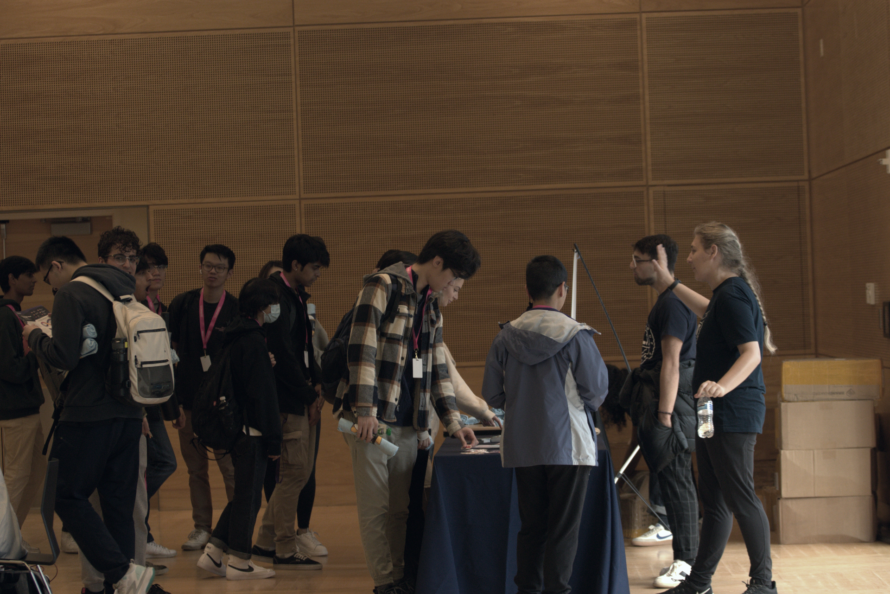
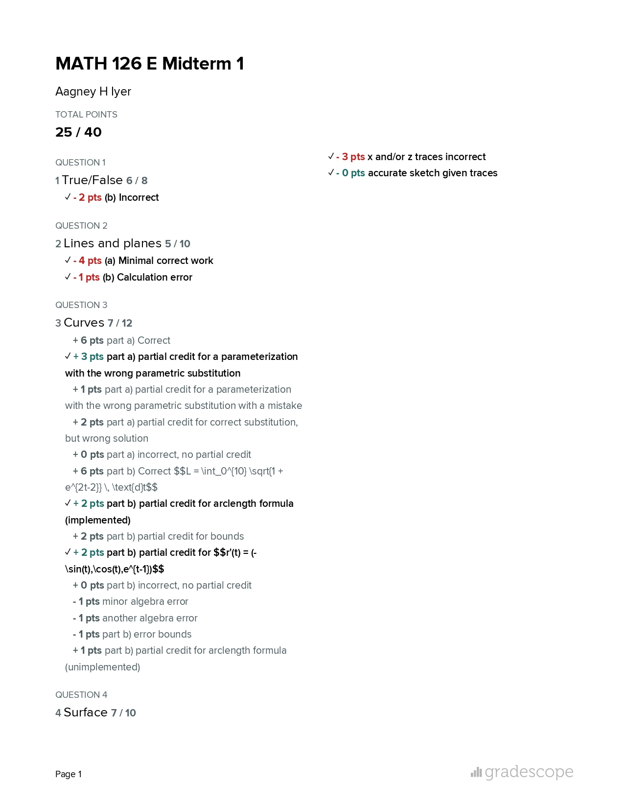
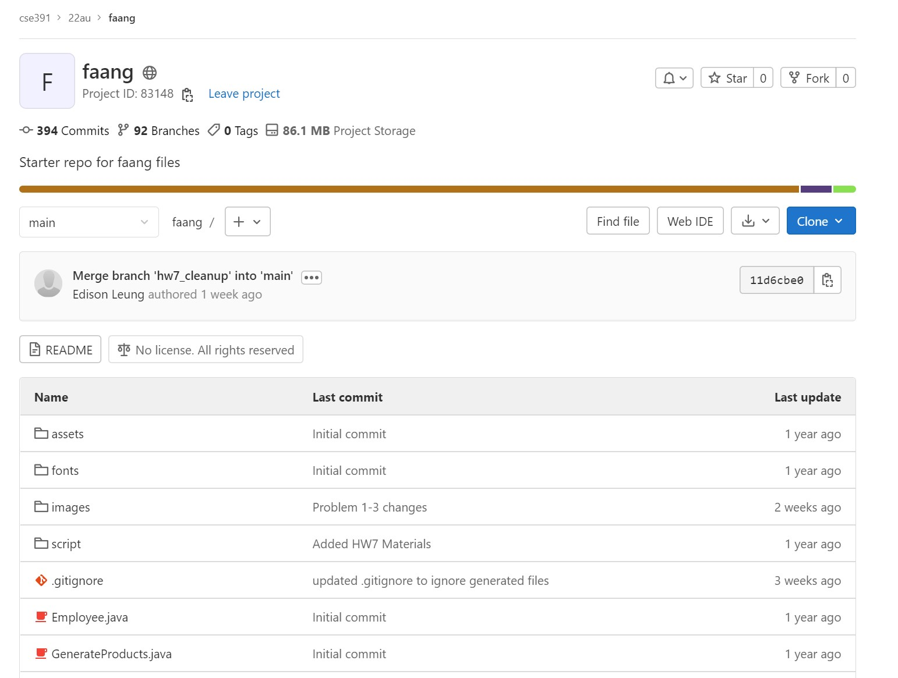

UW Honors Portfolio
About Me
Scroll to read my Honors Portfolio or click here to learn more about me.
DubHacks 2022
Me picking up some free MLH swag!
A hackathon is a type of programming competition where teams are given a limited time frame to build an innovative project, be it a website, game, or browser extension. DubHacks is UW's official student-run hackathon, and it's sort of a 'coming-of-age' event for computer science students.
I attended DubHacks '22, where my team of three decided to create a journal app that allows users to anonymously post and view other users' journal entries. In other (more realistic) words, we followed a tutorial on how to make blog posts and then spun it in a somewhat appealing way.
But there's more to DubHacks than just submitting a technical project. There were plenty of company sponsors, events and workshops to attend, merch items, free meals, fellow students to chat with, and above all, a unique atmosphere of excitement towards programming that you won't quite find at any other time of year. I wish I'd taken more advantage of some of the career opportunities at DubHacks, but fortunately I have a few more chances.
MATH 126 Midterm I
Things didn't go according to plan on this test.
Professor Jonathan Zhu is a young yet vastly experienced scholar with Mathematics degrees from MIT and Harvard, and research experience at Princeton and ANU. He also happens to be my instructor for MATH 126 this quarter. Whereas past exams from other professors follow a fairly straightforward format, including one predictable problem from each sub-unit, Professor Zhu's exam problems.
Heading into this test, I felt confident despite not knowing exactly what to expect from my instructor. This exam exposed a few key gaps in my understanding of the material though. Zhu had us answer conceptual True/False problems, sketch a 3-D surface, and reason through a tough question involving lines and planes.
This exam gave me a new appreciation for studying math. Leading up to the exam, I grinded through tons of computational problems, repeating the same process so as to develop "muscle memory". But higher level math requires a deeper understanding. For my final exam in this class, I'll focus more on watching conceptual videos to undetstand the 'why' behind those formulas and equations, and draw pictures to develop my own understanding. Building those types of skills is what'll help me improvise the next time I see a curveball of a question.
CSE 391 Homework #5
Our shared repository for CSE 391.
I'm taking two CS classes this quarter - CSE 351 and 391. The former is a four-credit degree requirement that deals with some really important computing concepts including memory, operating systems, and data representation. The latter is a one-credit class meant to give students a crash course on the command line. And as much as I'd like to say that I prefer 351, I can't help but feel that 391 resonates with me more.
The structure of the assignments is pretty creative, and they teach us important software tools in an engaging way. For example, Git is a version control system used by programmers. Think of it like a Google Drive for code, where a team can upload and change code in a big project, and you can see who contributed to what. Homework #5 of this class takes the form of a big project, where every student in the class is a member on a team of collaborative programmers. We each had to contribute an image and autobiography to a repository, and it was cool to see everyone's contributions.
This class is nice because, unlike most CS classes, it's a low-pressure environment where you choose how much you want to do. Class takes the form of optional 'office hour' style meetings, and most of the learning is done asynchronously through videos and assignments.